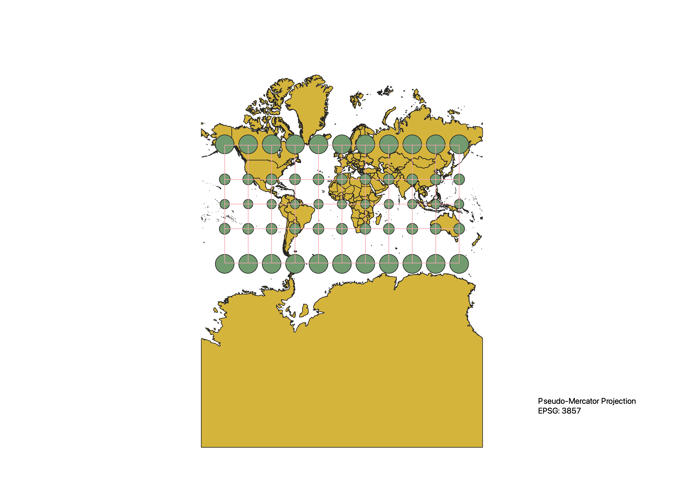

In this project I learned how to display images in different projections
After loading in the Natural Earth shapefile, I modified the ESRI setting on the bottom right.
The shape of the map would change according to different ESRI changes. After sucessfully changing
the shapefile to the desired ESRI format, the indicatrix tool will then be utilized to graph out
Tissot’s indicatrix.
WGS84 Projection (EPSG4326)
The WGS84 Projection focuses on the equator, where there are nearly no distortion at all. With
increase in latitude, as shown in Tissot's indecatrix, the distortion also increases. Distortion
is at it's maximum at the North Pole and South Pole. Distortion is the same across all locations
sharing the same latitude. With this unique quality, WGS84 is the best when looking at locations
closer to the equator.
Aitoff Projection (EPSG54043)
The Aitoff Projection focuses on the Prime Meridian, where the Longitude is 0. Locations on
the Prime Meridian experiences little to no distortion, as the Tissot's Indecatrix shows. The
further away from the Prime Meridian, the more distortion there is, and distortion also increased
with increase in latitude. In general, locations along the Prime Meridian is free from distortion,
and locations along the Equator experiences less distortion compares to North and South Pole.

Pseudo-Mercator Projection (EPSG3857)
The Pseudo-Mercator map preserves the shape of the Earth very well. As shown in the Tissot's
Indecatrix, that are only circles and no ellipses. That means the shape are not distorted. From
the map, we can also see that at the Equator, there are little distortion. With increasing latitude,
the size of the circles also increases, meaning the map would look larger than it actually is.
This kind of map will be very beneficial when navigating, as it preserves directions pretty well.

Sphere Winkel Projection (EPSG53018)
The sphere winkel projection didn't preserve the shape, direction, nor the area. However, when
looking at the map, you'll see it actually tries to minimize all three factors. The difference in
area is not as significant as Pseudo-Mercator Projection, the direction is not as distorted as Aitoff
projection, and distance is not significant as WGS84.

World Cylindrical Equal Area Projection (EPSG54034)
The world cylindrical equal area projection, as its name suggests, preserves the area of the
Earth. The tradeoff of that is the shape of the North and South pole is extremely distorted.
As shown on the Tissot's Indecatrix, ellipses at extreme latitudes are vertically compressed.
This kind of map would be useful when area is important, and the user is working with locations
near the Equator. If one is interested in the North Pole or the South Pole, this map might not be
the most ideal one to use.

World Equidistant Conic Projection (EPSG54027)
As the name suggests, the World Equidistant Conic Projection focuses on preserving the distance
along the Meridian is proportionally correct. A result of this is that the map is severely
distorted on the South Pole. The area of the South Pole is a lot larger than it actually is.
This map is the most useful at the North Pole as the shape/direction/area is very well preserved
there. It might also be valuable when interested in finding out the true distance between
two points. This map also choose its standard parallel from regions of interest, therefore allow
one to minimize distortion in their region of interest. The very top of the map is blank as the
Map is a conic projection.

North Pole Azimuthal Equidistant Projection (EPSG102016)
The Azimuthal Equidistant Projection is very similar to the one above(World Equidistant Conic
Projection). The distance is proportionally correct from the center point. Unfortunately, only
the center point is free from distortion. However, this map is still very useful when interested
in finding out the true distance between two points.

Peirce Quincuncial Projection (EPSG54090)
The Peirce Quincuncial Projection transforms the northern hemisphere into a square, and the
southern hemisphere into four triangles. The exaggeration of scale is even lower than the Mercator
projection. As the Tissot’s Indecatrix represents, other than the eight indicatrix on the four
Southern hemisphere triangles, the indicatrix are about the same size and preserves the shape
pretty well. Unfortunately, this projection is rarely used, it's most recent use is to present
sphere panoramas, as the most areas are recognizable.

Goode's Homolosine Projection (EPSG54052)
The Goode's Homolosine Projection preserves the shape pretty well and minimizes distortion across
the entire map. As seen on the Tissot's indecatrix, the indicatrix are roughly normal from the North
Pole to the South Pole. At the ripped-out locations, the indecatrix is more distorted. This map is
pretty accurate for land areas but it's depiction of the ocean is severely distorted.

Normal Map View